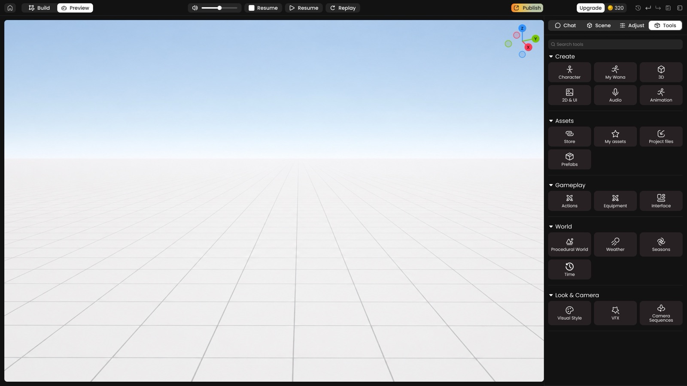

点了 + 场景里什么都没出现，不知道素材去哪了。
选了就直接出现在场景里，自动选中，马上能拖。
点 + 后，素材直接出现在视口中心并选中，可以马上拖动摆放。
上传图片后只进了项目素材，没法用图片生成角色。
贴一张图，说“照这个做一个 3D 角色”就开始生成。
支持上传参考图生成角色，拖图进来就能开始。
选中物体会铺满蓝色网格线，不够美观，也有点多余。
选中只出现一个干净的外框，一眼看清选了什么。
选中时只显示外框，去掉网格线。
一次只能选一个文件，也不支持拖进对话框。
多个图片、视频直接拖进对话框就行。
支持多选和拖拽上传，比如「第一张图生成场景，第二张图生成玩家」。
只能看 PC 端，看不到手机上是什么样子。
顶部一键切换手机、平板、电脑预览。
预览里加设备切换，能直接看手机端效果。
玩完关闭后跳到一个游戏列表页，和首页不太连贯，容易以为跳错了、找不到怎么回去。
关闭后进 Discover 页，左上角有明显的返回按钮，一点就回首页。
方案 1：关闭游戏后直接回到首页。
方案 2：像 Combos 一样进二级页，并给一个明显的返回首页按钮。
开始做之前要给每个物品手动选模型，这里 5 个物品、每个几十个可选，很容易卡在这一步。
默认开启自动选择，AI 先选好直接开始做，不喜欢再换。

基于 Figma 1112 的设计稿，可以直接点：